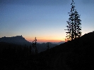
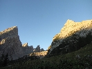
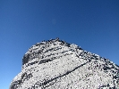

Letné Alpy 2012
2012 · Nemecko, Rakúsko
Letné nemecko-rakúske Alpy 2012
Watzmann, Berchtesgaden, Hochkonig, Grosse Geiger
August 2012
Je piatok podvečer a auto naložené lezeckým materiálom pristavujem pred Horárovým bydliskom. Z rôznych príčin na obvyklý Horcový alpský týždeň vyrážame iba dvaja. Sám som zvedavý ako to spolu s Horárom zvládneme. Hoci máme malý časový sklz oproti plánu, nie je to až tak dôležité, miesta nášho pôsobenia sú podstatne bližšie ako po iné roky (to aby sme sa stihli rýchlo vrátiť domov, keby sme to už spolu nevedeli vydržať:-) ).
Vápencové hory v Nemecku a Rakúsku sa nás už nevedia dočkať.
Naším prvým cieľom je nemecké pohorie Watzmann. Legenda o ňom hovorí, že najvyšší vrch je kráľ Watzmann, druhý je kráľovná a sedem vrcholkov medzi nimi sú ich deti. Keďže kráľ bol krutý, tak ho Boh zato potrestal a jeho aj s celou jeho rodinou ho premenil na kameň.
Watzmann je zároveň aj druhý najvyšší vrch Nemecka. V horolezeckom svete je známy hlavne svojou takmer dvojkilometrovou východnou stenou, ktorá si už vyžiadala takmer sto obetí. Nástup do steny je zo strany jazera Königsee a dopraviť sa k nemu dá iba loďou. Fascinujúci je aj prechod celého hrebeňa kráľa Watzmanna, prechod ktorého trvá zvyčajne dva dni.
Na parkovisku vo Wiembachbrücke parkujeme pred jedenástou v noci. Veľa neponocujeme, skoro ráno plánujeme vyraziť na túru. Čaká nás totiž dlhý deň, dvojdňovú akciu ideme vtesnať do jedného dňa. Neváhame a líhame si vedľa auta. V noci je tu celkom živo, prichádza niekoľko áut a ich posádky vyrážajú smerom hore za svetla čeloviek. My vstávame po piatej, veľmi sa nezdržiavame, batohy sme už nabalili pre spaním. Čaká nás prvá etapa, podľa popisu štvorhodinový výstup na Watzmann Haus. Musíme nastúpať asi 1700m. Svieži krok, minimálne zástavky a tak sme o pol ôsmej na chate. My si dávame frühstuck na terase a to už sú desiatky turistov roztrúsené po širokom suťovinovom hrebeni Hochecku. Dopĺňame vodu do fliaš a aj my smerujeme na prvý vrch Watzmanna. Tak trocha nezáživný výstup si spestríme a lezieme v ľahkom skalnom teréne. Ani to netrvá dlho a sme vo výške 2651m. Hocheck, prvý vrchol v trojvrcholovom hrebeni Watzmanna. Je tu veľa ľudí preto sa tu nezdržiavame dlho a postupujeme ďalej. Tu je vlastne východzí bod do najzaujímavejšej časti dnešného programu. Úzky, členitý a vzdušný hrebeň, na obidve strany spadajúci do závratných hĺbok. Postupujeme rýchlo a ani sa nenazdáme a sme na Mittelspitze, najvyššom vrchole celého Watzmanna. Ideme rovno ďalej, pred sebou máme dlhšiu a najťažšiu časť hrebeňa. Neopakovateľné sú pohľady do takmer dvojkilometrovej južnej steny. Výstup na Sudspitze je veľkolepým vyvrcholením celého prechodu. Medzičas máme nad očakávanie dobrý a tak si tu v kľude vychutnávame krásne počasie a nádherné pohľady na všetky strany. Pocity sú úžasné ani sa nám nechce ísť dolu, do doliny. Ani sa niet čo čudovať, predstava ešte asi 5-6 hodinového zostupu nie je moc lákavá. Čas sa nedá zastaviť a tak sa púšťame do najhoršej a teraz už aj najťažšej časti dnešnej akcie. Vyše 2000 metrov zostupu. Dve a pol hodiny, kým zostúpime do doliny sa mi zdajú večné, nohy dostávajú riadne zabrať. V doline je našťastie mäkučký piesok, netrvá dlho a sme na chate Wiembachgries Hütte. Vôbec niet pochýb, čo si dáme, dilema je len či to bude pollitrové, alebo ako niektorí okolo, dupláka. Rozum vyhráva, dávame si hneď litrové:-) Pohoda je nekonečná a tak si dávame ešte jedno "malé" pollitrové no už sa musíme (ako jedni z mála ) pohnúť ďalej. Je skoro osem hodín večer a pred nami hodina a pol cesty. Dolina je prekrásna len pocity blaha, „trochu“ kazia ubolené nohy. Po hodine cesty riečiskom sa objavuje aj voda a konečne si môžeme naše rozžeravené nohy aspoň trochu schladiť. Koľko málo stačí k šťastiu.:-) K autu prichádzame už potme. Za sebou máme fyzicky veľmi náročný deň, ale aj napriek tomu to bol fantastický deň.





Ráno vstávame dosť rozbití, ale aj tak sa presúvame do vedľajšej doliny, kde je mestečko Königsee. Trochu si obzrieme rovnomenné jazero, ešte je zavčasu, výletníci ešte nezačali chodiť. Pred jednou miestnou reštauráciou dve baby pripravujú stoly s takým "elánom", že mi to pripomína rodný kraj. Tak si neodpustím moju "vtipnú" poznámku, nech idú predávať na Miletičovú, keď ich to tu nebaví. Nereagujú, asi nerozumejú slovensky. Avšak Ivan idúci ďalej za mnou počuje, ako sa láskyplne oslovujú menom: "Krava". Nuž čo, sme všade.:-)
Obhliadka sa skončila, hory volajú. Sadáme do auta a stúpame hore. Dostávame sa až do výšky cca 1000m, kde je parkovisko Hinerbrand. Odtiaľ už iba po svojich alebo lanovkou. Rozum opäť raz prehral, ideme pešo. Chata Mitterkaseralm je hodinu a pol cesty. Je tu príjemná nedeľná atmosféra, moje nápady, aby sme tu dnes svätili a oddychovali nenachádzajú u Horára pozitívnu odozvu a tak dávam na chrbát ruksak a už stúpame smer Jägerkreutz. Chodník k nástupu k ceste Jägerlatein nevidíme a tak ho musíme hľadať. Traverzujeme cez strmý trávnatý svah. Zdá sa, že sme na mieste, prvá platňa má byť trojková, táto však vyzerá aspon za šesť. Rozhodujeme sa pre ľahšiu alternatívu, pre špáru. Jedna dĺžka v ľahšom teréne a zisťujeme, že sme vlastne nastúpili už do troch štvrtín cesty. Dávame poslednú dĺžku a môžeme baliť výstroj. Ešte ľahký výstup k Jägerkreuzu a potom už len zostup. Cestou späť k chate ešte hľadáme nástupovú cestu, no bezúspešne. Zastávka na chate, nestačíme sa tu čudovať, alpskú chatu tu ma v prenájme Turek Abddullah. Už som videl všeličo, ale také čosi.:-)
Tu nám taký čudný lezecký pár vysvetlí, kde je nástup. Program na nasledujúci deň je teda jasný. Druhý pokus. Nás čaká ešte zostup k autu. Konečne poriadna večera v kľude, počas ktorej zisťujem, že na kopci pred nami je Hitlerovo Orlie hniezdo. Zaspávame s trblietajúcimi sa hviezdami nad hlavou a na mäkučkej trávičke.
Ráno vyrážame po stopách zo včerajška, opäť hodinu a pol k Abdullahovi. Tentoraz už ideme správnym smerom a dokonca sme aj na mieste, kam sme sa chceli dostať už včera. J Päťková cesta Jägerleiten, sedem dĺžok v zvláštnom hrubozrnnom žliabkovanom vápenci. Lezenie s Watzmannovou svalovicou je "zážitok" tak si to aj patrične vychutnávame.:-) Poslednú dĺžku sme si už odliezli včera a tak dnes to šibneme do vedľajšej cesty. Opäť výšľap k Jägerkreutzu, občerstvovacia prestávka u Abdullaha a zostup k autu.


A akoby toho nebolo dosť, podvečer sa ešte presúvame do našej ďalšej lokality. Smerujeme už do Rakúska. Južná stranu Berchtesganenských Álp, pohorie Hochkönig. Auto zastavujem až na parkovisku na konci mestečka Mühlbach, pri Arthurhause. Tu plánujeme aj prenocovať. Pripravíme si naše obvyklé spanie pod plachou. Cez SMSky komunikujem s Ivanom na Slovensku. Na moju otázku o počasí odpovedá uspokojivo: „Stále v podstate rovnako, ráno dobre, ale už od obeda treba rátať s búrkami, zajtra trochu viac oblakov. Horko... “ S týmto vedomím si spokojne líhame a nad našou plachou je iba hviezdne nebo. O pol druhej nás však budí dosť búrlivý vietor. Za chvíľu sa k nemu pridáva aj dážď. Naše ukotvenie plachty zatiaľ drží, no aj tak sme napnutí, či to vydrží. Po chvíli sa však rozpútava lejak, aký sme v podobných podmienkach ešte nezažili. Keď nám vytrhne jednu stranu ukotvenia a začne na nás padať dážď sa až tak moc nevzrušujeme, máme ešte jednu rezervnú plachtu na sebe. Aj by sme tú prietrž ustáli ( vlastne uležali ), lenže naše ležovisko je na spodku mierneho briežka a asi 10 centimetrová Hochkönigská prílivová vlna nás dostala. Dokonca ani Horárove chvatné odhŕňanie cunami holými rukami nepomáha, ani jeho nasadenie nedokáže zastaviť vodu. Sme komplet mokrí. Iba rýchly ústup do auta nás zachráni. Po piatich minútach dážď ustáva. Nám je to už prd platné, aj spacáky sú totiž mokré. Zvyšok noci si „vychutnávame“ v aute.
Netrpezlivo očakávame ráno a východ slnka. S prvými lúčmi slnka môžeme začať sušiť. J Aspoň čo to obschne, kým vyrazíme na túru. Dnes našťastie máme najkratší nástup horu. Trištvrte hodiny pohodlne po lesnej ceste na MitterfeldAlm a odtiaľ už trochu strmšie pod Vierrinnen Kopfe. 460 m vysoký, dvanásť dĺžkový vápencový hrebeň je náš dnešný cieľ. Nástup dnes nachádzame bez problémov. Krásne a dlhé lezenie opäť v zvláštnom hrubozrnnom vápenci je úžasné. Nezvyčajné sú hlavne ostré žliabky v platniach, ktoré zdolávame technikou na sokolíka. Počasie nám stále praje, tentoraz (tak isto ako aj v noci) Ivanova predpoveď nevyšla. Teraz sa z toho tešíme a z nočnej cunami sa už smejeme, hlavne pri spomienke ako Horár holými rukami bránil prívalu vody.
Po šiestich hodinách sme na prvom vrchu, trochu si pohovieme a už zlaňujeme do sedla. Odtiaľ musíme vystúpať ešte asi 100 výškových metrov a sme na hlavnom gipfeli. Aj odtiaľto opäť zlaňujeme jednu dĺžku, avšak potom už len po svojich. Zostup trávnatým žľabom je bez problémov. Zastávka na alme, kde úžasný zážitok z dnešného dňa umocňujeme pri konzumácií vitamínu B. Podvečer dosúšame ešte vlhké veci z predchádzajúcej divokej noci. Nocľah opäť na parkovisku, pre istotu ale už na inom mieste. J
Noc je našťastie pokojná. Obavy z cunami sa našťastie nenapĺňajú.


Ráno presun do ďalšej oblasti, volíme oblasť Gross Venedigeru. Chata Kürsinger Hütte je východiskovým bodom pre dve naše možné túry. Ktorú z nich absolvujeme sa rozhodneme až na mieste. Chata leží na konci vyše dvadsaťkilometrovej doliny Obersulzbachtal, ktorú som už pred pár rokmi odmietol absolvovať pešo. Veď kto by sa chcel terigať skoro 6 hodín, len na chatu. No asi som už stratil aj posledné zvyšky zdravého rozumu. Ale pravdu povediac je to nádherná dolina, aj si tak hovorím sám pre seba, že by som sa tu možno aj niekedy ešte vrátil v kľude si to tu pozrieť.
Tesne po nastúpení do záverečného 600 metrového prevýšenia začína pršať, počiatočný dáždik sa časom mení na výdatný lejak a tak po ¾ hodinovom stúpaní prichádzame na chatu mokrí do nitky. Našťastie vchádzame rovno do vykúrenej sušiarne a nálada sa nám podstatne lepší. Večer si spestrujeme nemecko-anglicko-ruskou konverzáciou s bulharsko-kazašským personálom.
Budík mame nastavený na piatu hodinu rannú. Ráno prší, hoci dážď je hlásený až na poobede.
Ani neviem, či sa teším z toho, že po čase dážď prestáva. Únava a opotrebovanie je už značné a rád by som si aj pohovel. No je mi jasné, že keby sme nešli, tak by ma to nakoniec hnevalo a tak o pol siedmej vyrážame smerom na Grosse Geiger. Severovýchodný hrebeň je naša výstupová trasa, tak sme sa večer dohodli. Paradoxom je, že najprv musíme zostúpiť asi 200 výškových metrov, aby sme mohli začať stúpať. Ideme znateľným chodníkom, ktorý sa však postupne stráca a tak ideme svojou vlastnou cestou, smer je viacmenej jasný. Musíme sa dostať najprv do sedla. Keď kamene strieda veľmi nepríjemný tvrdý ľad, husto pokrytý popadanými kameňmi, nasadzujeme mačky. Nasleduje kamenný výšvih popri ľadovcovom potoku. Ešte pár sto metrov miernejším kamenným poľom a sme v sedle. Počasie je dobré. Po asi dvoch hodinách sme v polovici výstupu a tak si tu doprajeme chvíľu na oddych. Ďalej pokračujeme hrebeňom, konečne je to zaujímavejšie a ruky používane stále častejšie, tesne pod vrchom sa naväzujeme na lano. Dve dĺžky sa radšej istíme, nakoľko skala nie je moc pevná a neriskujeme zbytočný pád do hĺbky. Ešte vrcholový hrebienok a už je tu vrcholový kríž. Stisk rúk, fotografovanie, pár sladkostí a smerujeme dolu. Pôvodne plánovaný zostup cez ľadovec Obersulzbachkees pre jeho katastrofálny stav rušíme a zostupujeme našou výstupovou cesto. V sedle sme asi za hodinku, veľmi sa z toho teším, predstava piva na chate je veľmi lákavá. No cesta k chate je nekonečná, po dlhých dvoch hodinách s ubolenými nohami sme na chate.
Víta nás Bulharka, na jej otázky ako bolo a čo si dáme neviem vykoktať ani slovo, pochopí to a tak otázku poopraví a pýta sa primerane nášmu stavu: „Bier?“ Iba prikývnem. Konečne zhadzujeme ruksaky z pliec a vibramy z nôh. Sú tri hodiny poobede, krásny čas a my pomaly zbierame sily na ešte vyše 20 kilometrový zostup nekonečnou dolinou. Radšej nato ani nemyslím. Po hodinovom relaxe nám nič nezostáva, len nabaliť ruksaky, obuť vibramy a vyraziť. Pred chatou ideme okolo opaľujúcich sa šnicľov, oj ako im závidím to leňošenie.
Ale veď my všetci veľmi dobre vieme, že hrdinovia sa rodia iba v ťažkých podmienkach. Nasleduje trojhodinový zostup, keď nás po siedmej hodine večernej mrholenie „ zaženie“ do chaty na dolnom konci doliny. Zrelaxujeme pri vitamíne B. Odtiaľ ešte čosi vyše hodiny a sme na parkovisku pri aute.
Po bezúspešnom hľadaní vhodného miesta na spanie sa vraciame spať na parkovisko. Líhame si vedľa auta, odkiaľ nás ranný dážď opäť zaháňa do auta. Tentokrát sme boli rýchli a nezmokli sme.
Začína „obdobie dažďov“, no nám je to už to jedno, lebo je jasné že smerujeme domov.
Neskutočná akcia hoci mimoriadne f yzicky náročná ( svalovicu mám tuším ešte doteraz ).
Zostávajú nám úžasné spomienky, na aké sa len tak nezabúda.:-)


Dušan
Viacej fotografií z akcie na picasawebe
Pôvodná stránka: archív horecsport.sk